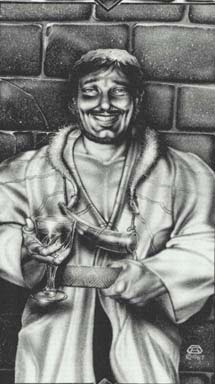

Жерард(Защитник морей Золотого Круга).Зеленые глаза, черные волосы, короткая борода и светлые усы, выглядит похожим на Корвина, но крупнее его и с более тяжелой челюстью. Громоздкий, могучий и устрашающий, Жерар гораздо более искренен, чем любой из его братьев и сестер, и он знает пределы своих возможностей. Он более доверчив к другим и бесспорно лоялен по отношению к Амберу. Жерар был тем, кто настаивал на заботе о Бранде, пока безопасность его брата не была бы гарантирована, и все же он не колебался перед тем, как присоединиться к Корвину против Бранда, когда заговор последнего был доказан окончательно. Он - на стороне Амбера, просто и честно. |
 |